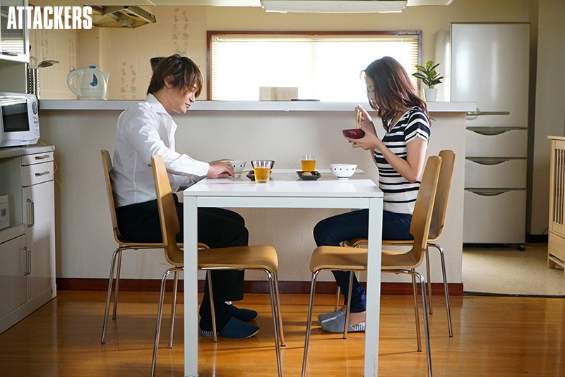

Gia đình cô Lan …! – Truyện LL Mẹ Con 2023 – Update Chương 45
Thông Tin Truyện
Tên Truyện: Gia đình cô Lan …! – Truyện LL Mẹ Con 2023 – Update Chương 45
Tác Giả: Boylovehp01
Danh Mục: Biến Thái, Loạn Luân, Máy Bay, Truyện Sex Ngoại Tình, Truyện Sex Người Lớn, Vụng Trộm
Ngày Cập Nhật : 03/04/2024

Trong lúc đó trên lầu 3 …
Trong căn phòng sáng đèn ở tầng 3 đó . Bên trong Dũng đang ngồi chán nản , lau chùi con cu dính đầy tinh trùng của mình . Sự chán nản của hắn , bắt đầu từ lúc mẹ cầm trên tay chiếc bao cao su . Và độ chán nản nó tăng đến đỉnh điểm . Khi mẹ hắn quay người , đưa hắn bao bắt đeo vào , rồi địt luôn , chứ ko cho hắn bú liếm hay làm gì khác . Lúc hắn lên giường , nằm xuống , sự hưng phấn , ham muốn của hắn đã gần như chạm đáy . Khi mẹ lên giường và đút cu hắn vào thẳng lồn . Là lúc này , cảm xúc của hắn thật sự đã chạm đáy . Hắn buông xuôi mọi thứ , nằm im , mặc kệ mẹ thích làm gì thì làm . Vì lúc này hắn đã tụt hết ham muốn trong người của mình rồi . Xong việc hắn còn phải nhận thái độ lạnh lùng , lãnh cảm của mẹ . Mẹ đứng dậy , xuống giường một cách dứt khoát . Nếu ko phải vì cái quần , nãy nó vứt ở dưới phòng bố mẹ . Thì có khi mẹ cũng ko lên tiếng , mà cứ thế mặc đồ vào rồi đi khuất khỏi tầm mắt của hắn một cách nhanh chóng …
Bữa ăn của hai mẹ con , im ắng , căng thẳng và chán nản . Bầu không khí bữa ăn bị vậy . Là được phát ra từ cơ thể thằng Dũng toả ra khắp căn bếp . Lan vừa ăn , vừa nhìn thằng Dũng một cách tỉ mỉ . Nàng ko ngờ nhìn nó chán đời đến mức như vậy. Nó chỉ cắm mặt xuồng bàn , gắp từng hạt cơm lên miệng để nhai . Từ lúc nó xuống , ngồi vào
bàn , nó đã như vậy . Mặt nó chưa lần nào ngẩng lên một cái nào . Đến thức ăn nó cũng chỉ gắp qua hai ba lần , còn lại hầu như là nó chỉ ăn cơm không .
_Có gì muốn nói ko ? Nàng lên tiếng hỏi nó , muốn xem nó thanh minh việc làm vừa rồi của nó như nào . Và cũng muốn biết cảm xúc của nó lúc này ra sao .
Nhưng đáp lại là sự im lặng từ nó . Nó chỉ biết cắm mặt xuống bàn , ăn từng miếng cơm mà ko trả lời nàng .
_Dũng ! Có nghe mẹ hỏi ko ? Nàng phải lên tiếng hỏi lại lần nữa .
_Không có gì ạ .
Một câu trả lời dứt khoát và cộc lốc . Khiến nàng hơi tức giận trong người .
_Con thật sự ko có gì nói với mẹ phải không ? Nàng nói với giọng giận dữ và trách móc .
_ Vâng !
Một từ “ Vâng ! “ đã khiến bầu không khí xung quanh trở lại sự im ắng và căng thẳng hơn ban nãy . Nghe cách trả lời của nó , nàng bực mình , liền mặc kệ nó ko thèm nói thêm một lời . Nàng chỉ tập trung vào ăn cho xong bữa cơm . Không thèm nhìn xem nó giờ ra sao .
_ Mẹ có biết , mẹ ác lắm ko ?
Trong lúc nàng đang cặm cụi ăn , thì một câu hỏi phát ra từ phía đối diện hỏi nàng . Thằng Dũng hỏi nàng có ác hay ko ? Là sao ? Vừa rồi là nó suýt hiếp nàng thành công . Nó lại còn ép nàng quan hệ ngay , chứ ko đợi đến tối . Nàng làm vậy là còn tốt chán . Mà giờ nó lại dám bảo nàng có ác lắm ko .
_ Con nói sao ? Nàng gằng giọng hỏi lại một cách giận
dữ .
_ Mẹ ác lắm . Còn nó trả lời nàng với giọng buồn bã và trách móc . Nó đang oán trách nàng ư ?
_ Mẹ ác ư ? … nàng nhìn thằng vào nó rồi tiếp tục … Con ngẩng đầu lên mẹ ngay .
Nàng nhìn nó từ từ ngầng đầu lên , rồi nhìn thằng vào mắt nàng . Qua đôi mắt của nó , nàng có thể thấy sự chán đời của nó . Nàng hạ tông giọng mình xuống một chút so với lúc nãy và nói một tràng .
_ Con nói mẹ ác ư . Nãy con biết con vừa hiếp mẹ ko ? … nàng dừng lại nhìn nó hai ba giây rồi tiếp … Con còn ép mẹ phải quan hệ ngay lập tức , để giải toả dục vọng của con . Con có nghĩ đến mẹ ko ? . Con biết cảm xúc của mẹ lúc đó ko ? . Con chỉ biết đến mỗi con … nàng lại dừng lại lần nữa nhìn nó , sau hàng loạt câu hỏi trách móc của nàng . Nó đã cúi mặt lại xuống bàn lần nữa … Con còn dám lấy cái chết để uy hiếp mẹ ! Mà rõ ràng lần trước , mẹ và con đã giao hẹn rõ ràng . Khi nào , lúc nào , là do mẹ quyết định . Mà bây giờ con ko những ko nghe . Còn muốn hiếp mẹ một cách dã man , mà ko nghĩ đến cảm xúc của mẹ . Giờ con lại dám hỏi mẹ có ác lắm ko ư ?
Nàng nó một tràng , mạch lạt và rõ ràng . Hàng loạt câu hỏi và tâm tư oán trách của nàng dành cho nó . Nàng nói hết ra trong một lần . Còn nó sau khi nghe nàng bắt đầu trách móc , đã cúi gầm mặt xuống mặt bàn . Không lên tiếng , ko nhúc nhích , chỉ lặng im nghe nàng trách móc .
_Sao giờ ko nói gì hả ? Nàng cất tiếng hỏi sau một phút im lặng của cả hai .
_Con xin lỗi … nó dừng lại mấy giây rồi mới tiếp tục nói tiếp … Con ko nghĩ đến cảm xúc của mẹ … nó vẫn tiếp tục nói với trạng thái cúi đầu ko nhìn nàng , và với giọng chán trường … Nhưng mẹ cũng có nghĩ đến cảm xúc của con
ko ? …
Nàng định lên tiếng cắt ngang lời của nó . Nhưng có vẻ nó nhận ra điều đó , nên đã đáp một câu làm nàng phải im lặng nghe nó nói hết .
_ Mẹ đừng lên tiếng , nghe con nói hết đã . Con xin lỗi vì việc lúc nãy mình làm . Nhưng tất cả là do mẹ … nó đang đổ lỗi cho nàng , nàng muốn lên tiếng nhưng mà nó đã ngăn cản trước đó rồi . Nên chỉ im lặng mà lắng nghe nó nói tiếp … Thà mẹ ko bắt đầu chuyện này ngay từ đầu . Thì con đã ko khổ sở , chết lên chết xuống như bây giờ . Mẹ có biết hầu như ngày nào con cũng rất khó chịu ko ? Đã vậy … bố mẹ đã làm tình đến 3 lần . Mà ko nghĩ đến cảm xúc của con . Con phải nghe tất cả tiếng động của hai người phát ra với sự khó chịu vô cùng . Đã thế mẹ nghĩ xem , đã bao lâu rồi … mẹ ko đả động gì đến con ? . Mười ba ngày rồi mẹ ! Mẹ có biết con bức bách , khó chịu đến mức nào ko ? Mẹ nói xem con nói mẹ ác với con là sai
sao ?
Nàng im lặng , nghe từng từ , từng chữ , trong lời tâm sự của con trai . Nàng bất ngờ hoàn toàn , nó biết cả chuyện nàng và chồng đã quan hệ mấy lần . Nó còn đếm từng ngày kể từ lúc nàng cho nó quan hệ với nàng . Điều nàng đến nàng cũng ko rõ , mà nó lại có thể nói rõ ràng như vậy . Trong lòng nàng tự nhiên xáo trộn . Nãy đang oán trách , giận dữ . Giờ lại áy náy và thương sót con trai . Nàng ko ngờ nó khổ sở , buồn rầu như vậy . Giờ phải làm sao ? . Nàng cũng ko biết , trách nó cũng ko được . Lời nói của nó đã nói hết lên tất cả rồi . Ở cái tuổi của nó , một khi đã biết mùi con gái . Rất khó để kiềm chế , chưa kể nó lại còn phải nghe tiếng động do cuộc ân ái của hai vợ chồng nàng phát ra . Nó kìm hãm được 13 ngày , rồi mới dám làm xằng làm bậy với nàng là một sự kiềm chế quá đỉnh ở tuổi của nó .
Bầu không khí trầm lắng bao trùm xung quanh bàn ăn . Thằng Dũng chỉ biết cúi gầm mặt xuống bàn , ko nhúc nhích gì sau những lời tâm sự vừa rồi . Còn Lan thì trầm ngâm ,dõi mắt nhìn về phía đối diện nàng . Nàng chỉ thấy một cái đầu đang cúi xuống bàn ủ rủ , với mái tóc đen nhánh nhưng hơi lù xù , rối rắm …
_ Con … khó chịu lắm à ? Lan lên tiếng hỏi con trai với giọng trầm và ấm áp , quan tâm .
_ Vâng !
Lan trầm lặng một lúc , đưa mắt nhìn về phía con trai đầy ấm áp và quan tâm nói .
_ Sau này mẹ sẽ để ý đến cảm xúc của con hơn … nàng dừng lại cầm đũa chọc vào đầu con trai rồi tiếp … giận mẹ à ! Sao ko ngẩng đầu lên nhìn mẹ hả con trai ?
Gương mặt ủ rũ đang trong trạng thái cúi mặt xuống bàn . Từ từ ngẩng lên , mắt đối mắt với nhau . Gương mặt ủ rũ , chán trường lúc nãy giờ đã tươi tắn hơn chút . Khi nhìn thấy gương mặt của người phụ nữ đối diện . Đang hiện nụ cười nhẹ trên môi . Và đôi mắt đầy trìu mến và ấm áp nhìn về phía mình .
_ Không … tại con ko dám nhìn mẹ … vì chuyện vừa nãy con làm !
Lan thấy gương mặt hối lỗi và có chút tươi tắn hơn chút của con trai . Trong lòng cảm thấy một sự ấm áp khó tả . Không biết đó là sự ấm áp của một người mẹ dành cho con trai , sau khi nó làm sai và nhận lỗi . Hay sự ấm áp của tình yêu trai gái khơi mào trong lòng nàng nữa .
_ Không sao ! Mẹ cũng có lỗi , coi như giờ hai mẹ con hoà nhá ?
_ Vâng ạ . Lan nhìn nó trả lời một cách vui vẻ . Với nụ cười dài đến mang tai trên mặt . Mà trên mặt cũng nở nụ cười theo , trong lòng cũng vui lây theo .
_ Từ này về sau có gì phải nói với mẹ , biết chưa ?
_ DẠ !
_ Thế giờ còn tâm sự gì muốn nói mẹ nghe nữa ko ?
Nàng vừa hỏi xong , thì nó lập tức cúi mặt . Hình như nó cố né tránh ánh nhìn và câu hỏi của nàng . Nàng cũng ko
rõ , hai mẹ con đang vui vẻ , sao nó lại như vậy . Nàng đành lên tiếng hỏi rõ nguyên nhân .
_ Sao tự dưng cúi mặt xuống vậy ? Còn gì giấu mẹ ko dám nói à ?
_ Không … khônggg ạ … Nó rất lắp bắp khi trả lời câu hỏi của nàng . Càng làm nàng thấy khó hiểu .
_ Thật ko ? Sao lắp bắp như gà mắc tóc vậy !
_ Con … sợ … mẹ … giận …
_ Chuyện gì mà làm mẹ giận ?
_ Mẹ hứa ko giận … nhá !
_ Anh còn trả treo với mẹ ! Không hứa gì hết , ko nói thì thôi nhá ? Nàng đanh giọng , nói rõ ràng quan điểm của mình . Không cho nó cơ hội trả treo .
_ Không ! Không ! Con nói … nó vội ngẩng mặt nhìn nàng với vẻ mặt sợ sệt mà nói … tại … tại con …
_ Tại cái gì ? Với giọng như gà mắc tóc , làm nàng ko chịu được mà gắt gỏng hỏi rõ ràng .
_ Tại con muốn xin mẹ … một thứ ?
“ Một thứ “ … Nó nói câu này , nàng cũng đoán mò , đoán non ra vấn đề . Nhưng để xác thực lại nàng hỏi rõ .
_ Xin cái gì ?
Nó liếc nhìn nàng cái rồi lại quay sang chỗ khác . Cứ thế lặp đi lặp lại vài lần , như kiểu đang dò sét thái độ của
nàng . Mãi một lúc nó mới dám lên tiếng .
_ Mẹ … cho con quan hệ với … mẹ … một … tuần một
lần được ko ạ ?
“ Một tuần một lần “ … Cái gì , nàng ko ngờ nó bạo gan xin hẳn như vậy . Nàng lờ mờ đoán được vụ nó xin nàng quan hệ này nọ rồi . Nhưng ko dám nghĩ nó dám xin thẳng thắn , tuần 1 lần như vậy .
_ Không được ! Nàng lườm nó rồi mới tiếp tục … Tôi chưa mắng anh vì cái tội rình bố mẹ . Giờ anh lại còn dám mở miệng xin quá đáng như vậy hả ?
_ Con có rình đâu tại mẹ rên … Vừa nghe từ “ mẹ rên “ nàng liền đanh mắt lườm chằm chằm vào nó rồi . Hừm ! … Con xin lỗi … tại bố mẹ phát ra tiếng to quá , chứ con ko có rình đâu .
_ Thật chứ ?
_ Vâng ! Còn thề độc luôn cho mẹ xem . Con thề …
Nàng cũng là người khá mê tín . Nên nghe nó nói thề độc , sợ nó lại ứng vào người nó . Liền lên tiếng cắt ngang .
_ Được rồi , ko cần thề thiết cái gì cả !
_ Thế mẹ đồng ý rồi nhá ?
_ Tôi đồng ý bao giờ ! Đã nói không rồi mà .
_ Đi mà mẹ ! Đi mà mẹ …
_ Không là không . Nhiều nhất một tháng hai lần ko hơn ko kém . Nàng bon mồm nói mà ko kịp nghĩ . Hứa hẹn một cách vội vàng , qua loa .
_ Thế con chết mất ! Một tuần đi mà mẹ !
_ Thế thì anh tự xử đi . Mẹ nói rồi đó ! Nàng cương quyết với quyết định của mình .
_ Nhưng mẹ ko cho con xem bậy với thủ dâm mà … Nó nhìn nàng vời vẻ mặt van nãi , xin xỏ . Tìm mọi cách , mọi lí do để đạt được mục đích . Nhưng nàng vẫn cương quyết .
_ Vậy giờ tôi cho phép anh xem nhá . Thế là được rồi chứ gì !
_ Nhưng còn chỉ thích mẹ thôi ! Chứ ko thích cái đó ! Đi mà mẹ !
_ Không được là không được rõ chưa …
Cứ thế cuộc van xin , nài nỉ của nó kéo dài hơn 5 phút đồng hồ . Cuối cùng trước sự cương quyết và cứng rắn của nàng . Nó mới thôi van nài , chấp nhận sự thật . Nhưng nàng ko biết nó có kế hoạch khác .
_ Mẹ hứa với con một chuyện được ko ?
_ Chuyện gì , nói trước đi mẹ xem xét đã ?
_ Giờ con chưa nghĩ ra ! Nhưng mẹ nhận lời như tặng con một món quà đi ?
_ Quà ? Nhưng dịp gì mà anh đòi mẹ tặng quà ! Nàng bất ngờ khi nghe nó nói vậy .
_ Con vào lại đội tuyển toán của trường rồi . Đang luyện ôn đề để 2 tháng nữa thi cấp tỉnh . Nếu con đạt giải nhất mẹ nhận lời nhá ?
Nàng ko bất ngờ việc nó vào lại đội tuyển toán . Nhưng để đạt giải nhất thì hơi khó . Tại trường nó có con Lan cùng tên nàng . Đã đạt giải nhất từ cấp 2 đến giờ . Nó với cái Lan , như kì phùng địch thủ từ cấp 2 đến giờ . Nhưng chưa lần nào nó thắng cái Lan để lấy giải nhất . Nàng ngẫm nghĩ một lúc nàng vừa muốn khuyến khích ,vừa muốn tạo động lực cho nó .
_ Được nếu con lấy được giải nhất . Mẹ sẽ làm một thứ con muốn được chưa ?
_ Vâng ! HiHi ! Nó vừa cười vừa hí hửng trả lời nàng .
Nhưng nàng ko biết nàng vừa rơi vào bẫy của nó . Thực ra nó biết nó muốn gì rồi . Nhưng ko dám nói ngay ra được . Nếu nói ra chắc chắn nàng sẽ ko đồng ý .
Thế là hai người lại tiếp tục bữa ăn . Thi thoảng nói chuyện trên trời dưới biển . Khiến bầu không khí căng thăng , im ắng ban đầu đã tan biến . Mà là bầu không khí vui vẻ , cười đùa của hai mẹ con .
Trong lúc rửa bát , nó đứng bên cạnh nàng , tráng và lau khô rồi cất bát đũa . Thì nó lên tiếng khiến nàng rùng mình một cái .
_ Nãy mẹ bảo tháng … hai lần . Vậy bắt đầu từ tối nay được ko mẹ ? Hihi …
_ Không ! Chả phải nãy làm rồi còn đòi hỏi nữa hả ? Tuy hơi giật mình khi nghe nó hỏi . Nhưng nàng lấy lại bình tĩnh trả lời quyết đoán .
_ Nhưng nãy con ko có cảm xúc gì như …
_ Tại ai hả ? … Nàng cắt ngang lời nói của nó . Không cho nó tiếp tục .
_ Đi mà …
_ Mẹ nói rồi ko được . Nàng liên tiếp cắt ngang lời nói của nó . Không cho nó cơ hội .
Sau khi rửa bát xong . Nàng bảo nó lau bàn . Còn nàng thì bước đi lên phòng để nghỉ ngơi …